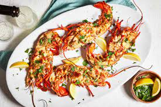

Lobster Thermidor

What is Lobster Thermidor ?
Lobster thermidor is a French dish consisting of diced lobster meat stuffed into a lobster shell, topped with a buttery wine sauce,
sprinkled with cheese, and broiled.The iconic dish gets its name from a popular 1891 play called Thermidor by Victorien Sardou.
Recipe Overview
Step 0: Stuff the lobsters
Cut the lobsters in half and remove the meat. Cut the meat into pieces, then return them to the shells.
Step 1: Make the sauce
Cook the shallots in butter, then add the wine and cream. Bring to a boil, cook until reduced, and add the remaining ingredients (besides the cheese).
Step 2: Assemble and broil
Spoon the sauce over the stuffed lobsters and sprinkle with cheese. Broil the lobsters until the cheese is golden brown.
Ingridients
- 1 medium (1 1/2 pound) cooked lobster
- 2 tablespoons butter
- 1 shallot, finely chopped
- 1 ⅜ cups fresh fish stock
- ¼ cup white wine
- ¼ cup heavy cream
- ½ teaspoon hot English mustard
- 2 tablespoons chopped fresh parsley
- tablespoon fresh lemon juice
- salt and freshly ground black pepper to taste
- ¼ cup freshly grated Parmesan cheese
Steps
- Cut lobster in half lengthwise, and remove any meat from the claws, tail, and head. Cut meat into pieces and place back into the shells.
- Melt butter in a large skillet over medium heat. Add shallot; cook and stir until tender. Mix in fish stock, white wine, and cream.
Bring to a boil, and cook until reduced by half. Mix in parsley, lemon juice, mustard, salt, and pepper.
- Preheat your oven's broiler.
- Place stuffed lobster halves on a broiling pan or baking sheet. Spoon sauce over the meat and sprinkle with Parmesan cheese.
- Broil in the preheated oven until just golden brown, 3 to 4 minutes. Serve immediately.
Return to main page